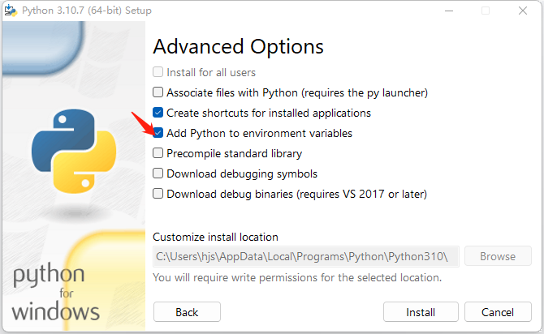

{% extends 'layout.html' %}

{% block main_body %}

	  <div class="container-full">
      <section class="content">

    
      <div class="row" >


			  <div class="col-12" >
          <div class="box box-solid bg-danger">
            <div class="box-header">
            <h4 class="box-title"><strong> 提示</strong></h4>
            </div>
  
  
            <div class="box-body">
             如果您未安装python请按照提示安装，安装过程 出现错误，请查看<a href="https://forum.klang.org.cn/topic/76" > 安装帮助 </a></p>
             <font color=red>安装提示：</font></p>
             <font color=red>点击下载后安装python 3.10 成功，但是仍不能访问python3.10，请再次安装并设置环境变量。（见第二步）</font></p>
            
             一、下载 python </p>
             1、) 从本地<a class="btn-sm btn-info"   id="install_default_python">安装</a> <font color=red>*推荐</font></p>
             2、) 网络直接点击 <a class="btn-sm btn-info" id="download" href="https://www.python.org/ftp/python/3.10.7/python-3.10.7-amd64.exe">下载 </a> </p>
             2.1、) 点击安装 已经下载的 Python </p>
             <br>

             二、安装 python </p>
             --安装python3,注意勾选 添加到环境变量</p>
             </p>
            


            
            </div>

          </div>
        </div>
      </div> <!--row-->
      
     <div class="sweet-container" style="display: none;">

    
      <div class="sweet-overlay" tabindex="-1" style="opacity: 1.11; display: block;"></div>

      <div class="sweet-alert showSweetAlert visible" data-custom-class="" data-has-cancel-button="false" data-has-confirm-button="true" data-allow-outside-click="false" data-has-done-function="false" data-animation="pop" data-timer="null" style="display: block; margin-top: -124px;">

      
      <div class="sa-icon sa-custom" style="display: none; background-image: url(&quot;../images/avatar/avatar-1.png&quot;); width: 80px; height: 80px;"></div>
      <h2>正在下载</h2>
      <p style="display: block;" id="download_info">  下载中...</p>

      <div class="sa-button-container">
        <button class="cancel" tabindex="2" style="display: none; box-shadow: none;">Cancel</button>
        <div class="sa-confirm-button-container">
          <button class="confirm" tabindex="1" style="display: inline-block; background-color: rgb(140, 212, 245); box-shadow: rgba(140, 212, 245, 0.8) 0px 0px 2px, rgba(0, 0, 0, 0.05) 0px 0px 0px 1px inset;">OK</button><div class="la-ball-fall">
            <div></div>
            <div></div>
            <div></div>
          </div>
        </div>
      </div></div>
    </div>
       

   
  </section>
  </div>


    {% endblock %}


    {% block externjs %}

    <script>
      $(document).ready(function(){
    
        $("#download").click(function(){
          console.log("click download");
          $(".sweet-container").show();
        })
    
        $(".confirm").click(function(){
          $(".sweet-container").hide();
        })
    
        $("#install_default_python").click(function(){
          install_default_python_func();
        })


      })
    </script>

    
    {% endblock %}

